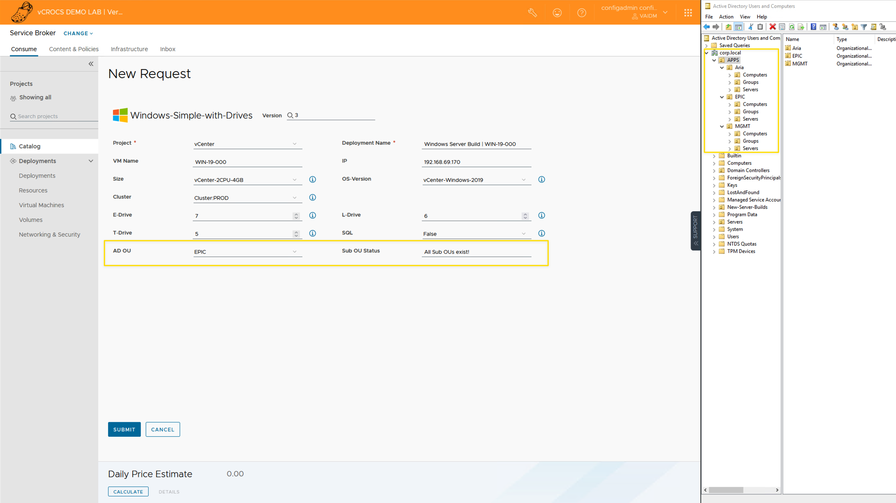

VMware Aria Automation Orchestrator | Active Directory OUs

How to use VMware Aria Automation Orchestrator Actions to make sure AD (Active Directory) OU (Organizational Unit) structure is in place BEFORE creating new Servers.
VMware Aria Automation
VMware Aria Automation 8.14.1 was used for this Blog Post. When new versions of VMware Aria Automation are released, the code or process may need to be changed.
All the source code for this Blog is saved in my GitHub Repository. Click on the links within the blog to access the code.
VMware Aria Automation Orchestrator Actions are a very powerful way to add checks into your server build process. This Blog Post shows you how to verify that the AD OU structure is in place before you do a new Server Build. Within the VMware Aria Automation Catalog, you can have custom forms to ask all the questions required to build a new server (see screen shot). One of the questions can be which AD OU you want to create the new Windows Server. The list of existing OUs in AD can be a dropdown with all the AD OU names provided by a Action. After you select the OU name to locate the new Windows Server Build, the next Action can verify that all the AD Sub OUs are in place. If the OUs are in place the action will only verify. If an AD OU is missing, the Action will create the AD OU before you press submit to create new Server.

Watch this video to see the complete process that is discussed in this Blog Post.

Here is Javascript code for the Action that returns all existing AD OUs to populate the dropdown on the custom form. Watch the Video to understand how the code works.
Code:
// Orchestrator Action to list AD Sub OUs
// Created by the VMware by Broadcom Healthcare Aria Team
// Before you use this Action you MUST run the next 2 Workflows
// You MUST run the Workflow "Add an Active Directory server" to add Active Directory Server to Orchestrator
// You MUST also run the Workflow "Configure Active Directory plug-in options" and set the "Default Active Directory server"
// Set the Parent OU value (APP Name)
var parentOU = "APPS";
//Search for Parent OU Value
var parentOUPath = ActiveDirectory.search('OrganizationalUnit',parentOU);
System.log("Parent OU: " + parentOUPath);
// Create Array of Sub OUs
for each (ou in parentOUPath){
var childOUs = ou.organizationalUnits;
//System.log("Child OUs: " + childOUs);
}
//System.log("Child OUs Length: " + childOUs.length);
var data = new Array();
for each (var ouObject in childOUs){
data.push(ouObject.name)
//System.log("Existing OU Name: " + ouObject.name);
}
System.log("Existing Sub OUs: " + data);
return dataHere is Javascript code for the Action that verifies that the AD OU structure is in place and creates the AD OUs if they do not exist. Watch the Video to understand how the code works.
Code:
// Orchestrator Action to Verify AD OU Structure
// Created by the VMware by Broadcom Healthcare Aria Team
// Before you use this Action you MUST run the next 2 Workflows
// You MUST run the Workflow "Add an Active Directory server" to add Active Directory Server to Orchestrator
// You MUST also run the Workflow "Configure Active Directory plug-in options" and set the "Default Active Directory server"
// Function to create a sub OU
function performAction(item, substring) {
try {
// Attempt to create the sub OU
item.createOrganizationalUnit(substring);
System.log("Sub OU '" + substring + "' created successfully.");
} catch (e) {
System.error("Error creating Sub OU '" + substring + "': " + e.message);
}
}
// Set the Parent OU value (APP Name). Create an Action input named parentOU and type is string.
//var parentOU = "MGMT";
//var parentOU = "Epic";
//Search for Parent OU Value+
var ous = ActiveDirectory.search('OrganizationalUnit',parentOU);
System.log("ous: " + ous);
//System.log("ous: " + ous.length);
if(ous.length > 0){
// Create Array of Sub OUs
for each (ou in ous){
var childOUs = ou.organizationalUnits;
//System.log("Child OUs: " + childOUs);
}
// Build a string of Sub OU Values
var subOUs = "";
for each (var ouObject in childOUs){
subOUs = subOUs + ouObject.name + ":"
System.log("Existing OU Name: " + ouObject.name);
}
System.log("Existing Sub OUs: " + subOUs);
// Define the array of sub OU Names to look for
var subOUNames = ["Groups", "Servers", "Computers"];
// Loop through each substring
subOUNames.forEach(function(substring) {
// Check if the string contains the substring
if (subOUs.indexOf(substring) !== -1) {
System.log("Sub OU '" + substring + "' Exists.");
} else {
System.log("Sub OU '" + substring + "' DOES NOT Exist! Creating..");
// Code to create the AD Sub OUs
//System.log("substring: " + substring)
var ous = ActiveDirectory.searchExactMatch("OrganizationalUnit",parentOU);
//System.log("ous: " + ous)
// Iterate over the items using forEach
ous.forEach(function(item) {
performAction(item, substring);
});
}
});
System.log("All Sub OUs exist!")
return "All Sub OUs exist!"
} else {
System.log("OU " + parentOU + " Not Found")
return "OU " + parentOU + " Not Found"
}Links to resources discussed is this Blog Post:
When I write my blogs, I always say there are many ways to accomplish the same task. This article is just one way that you could accomplish this task. I am showing what I felt was a good way to complete the use case but every organization/environment will be different. There is no right or wrong way to complete the tasks in this article.
- If you found this Blog article useful and it helped you, Buy me a coffee to start my day.